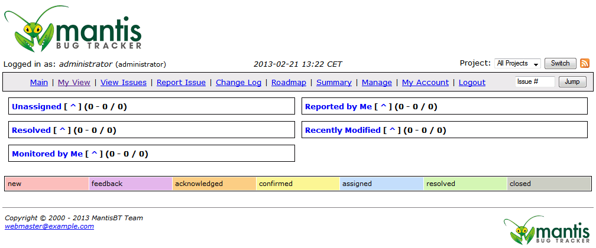
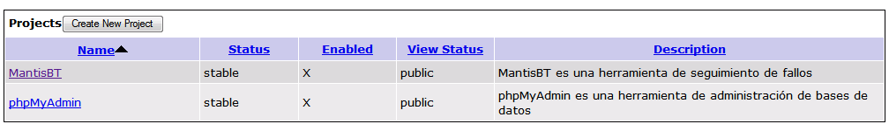
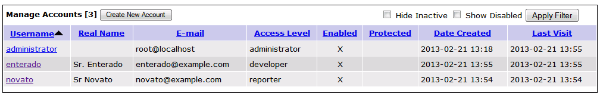
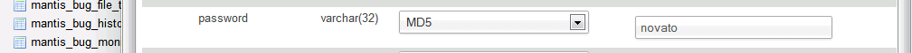
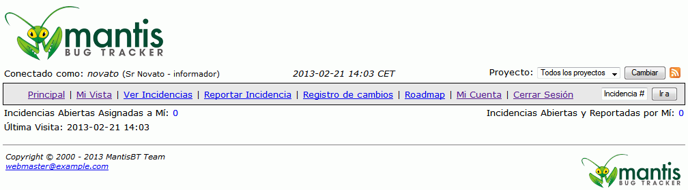
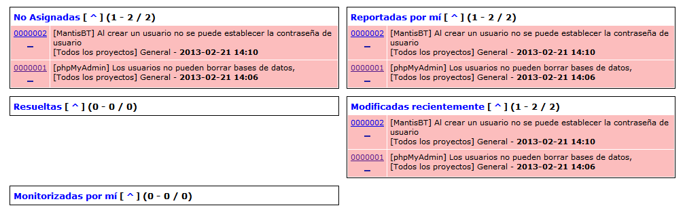
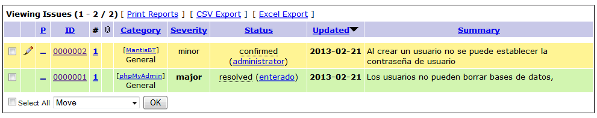
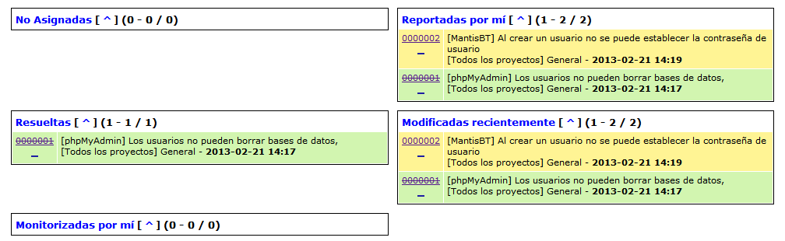

En este ejercicio hay que acabar entregando:






He añadido esta línea al fichero config.inc.php de phpMyAdmin:
$cfg['AllowUserDropDatabase'] = true;
Creo que eso no tiene arreglo. Como solución, el administrador puede cambiar las contraseñas en la base de datos.

